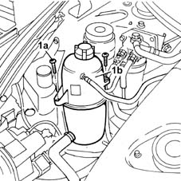
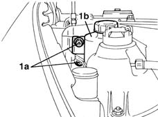
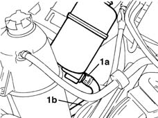
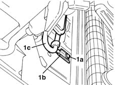
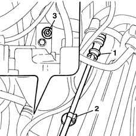
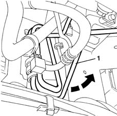

4130B53 heat exchanger pipe - r r for rhd versions
- Path
- Procedures > 41 STEERING > 4130 POWER ASSISTED STEERING > 4130B power steering hydraulic sytem > 4130B53 heat exchanger pipe - r r for rhd versions
- Kind
- repair procedure (removal / refitting; the operation number is the code)
- Applies to
- all engines; all production periods
- Interactive page
- https://sloeber94.github.io/elrnDB-fMltpl/en/#/2891699
Applies to: all engines; all production periods; only with equipment: Right hand drive
 Removing
Removing
 Refitting
RefittingPlace the vehicle on a lift and position a suitable container for collecting the fluid.
Disconnect the battery leads
Drain the fluid from the power assisted steering fluid reservoir using a syringe.
Applies to: engines: 1.9 JTD 8V; all production periods; only with equipment: Right hand drive
Undo the fixing nuts and move the diesel filter aside
1. Undo the bolts (1a) fixing the engine coolant reservoir (1b) and move it aside.

Applies to: engines: 1.6 16v; all production periods; only with equipment: Right hand drive
Release the active charcoal filter from the guides and move it aside.
Applies to: all engines; all production periods; only with equipment: Right hand drive
1. Undo the fixing nut and move the power assisted steering fluid reservoir aside.

Applies to: all engines; all production periods; only with equipment: Right hand drive
1. Open the band (1a) and disconnect the flexible section of the heat exchanger pipe (1b) from the reservoir.

Applies to: all engines; all production periods; only with equipment: Right hand drive
5550B30 L/H OR R/H HORN (ONE) - R+R
1. Undo the bolt (1a) fixing the heat exchanger (1c) mounting bracket (1b) to the bodyshell.

Applies to: all engines; all production periods; only with equipment: Right hand drive
1. Disconnect the rapid connector for the rigid section of the heat exchanger pipe.
2. Release the pipe retainer from the bodyshell.
3. Undo the heat exchanger fixing bolt.

Applies to: all engines; all production periods; only with equipment: Right hand drive
Raise the vehicle.
1. Remove the heat exchanger pipe releasing it downwards.

Applies to: all engines; all production periods; only with equipment: Right hand drive
Refitting
RemovingPosition the heat exchanger pipe starting at the bottom of the vehicle.
Lower the vehicle.
Secure the pipe to the retainers and tighten the fixing bolts to the recommended torque.
 | Fastening | Component | Ø | Value (daNm) |
|---|---|---|---|---|
- | Nut | POWER STEERING HEAT EXCHANGER PIPE | M6 | 0.6 |
Connect the rapid pipe connector.
5550B30 L/H OR R/H HORN (ONE) - R+R
Secure the flexible section of the heat exchanger pipe and tighten the band.
Position the reservoir and tighten the fixing nut.
| Fastening | Component | Ø | Value (daNm) |
|---|---|---|---|---|
- | Nut | POWER STEERING FLUID RESERVOIR | M6 | 0.8 |
Applies to: engines: 1.6 16v; all production periods; only with equipment: Right hand drive
Position the active charcoal filter.
Applies to: engines: 1.9 JTD 8V; all production periods; only with equipment: Right hand drive
Position the engine coolant reservoir and tighten the fixing bolts.
Secure the nut fixing the diesel filter.
Applies to: all engines; all production periods; only with equipment: Right hand drive
4130B14 Power assisted steering fluid reservoir CAP - R.R. - Check level and top up if necessary.
Connect the battery terminals.
Remove the vehicle from the ramp.